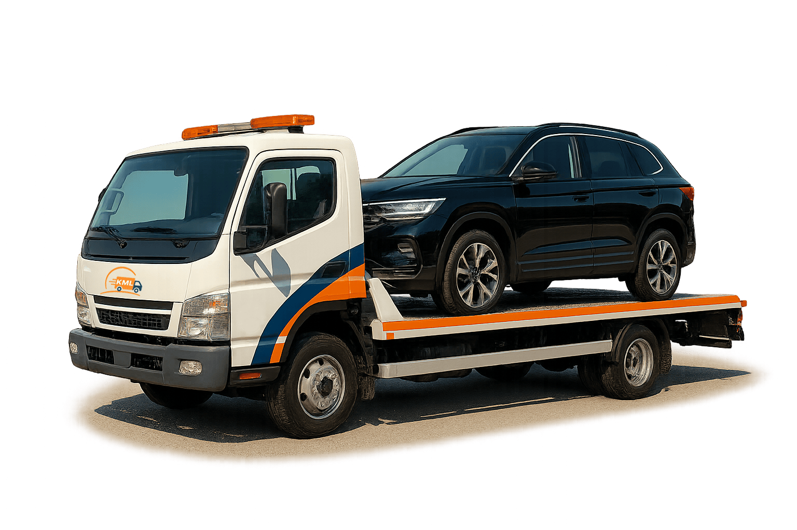

Kirim Mobil Via Towing
Solusi pengiriman mobil satu unit dengan armada towing profesional

Layanan Pengiriman Mobil dengan Towing
Layanan pengiriman mobil via towing kami menyediakan solusi cepat dan aman untuk mengirim satu unit mobil menggunakan truk towing khusus. Dengan armada yang terawat dan sopir berpengalaman, kami menjamin mobil Anda akan sampai di tujuan dengan selamat.
Keunggulan Layanan Kami:
- Pengiriman door to door langsung ke alamat tujuan
- Asuransi pengiriman termasuk dalam paket
- Driver berpengalaman dengan sertifikasi resmi
- Tracking perjalanan real-time
- Layanan 24 jam untuk kebutuhan darurat
Mengapa Memilih Layanan Towing Kami?
Keamanan Terjamin
Mobil diikat dengan sistem pengaman khusus dan dilengkapi asuransi selama perjalanan.
Cepat & Tepat Waktu
Pengiriman langsung tanpa transit dengan estimasi waktu yang akurat.
Jangkauan Luas
Melayani pengiriman ke seluruh wilayah Indonesia, termasuk daerah terpencil.
Dukungan 24/7
Tim customer service siap membantu kapan saja selama proses pengiriman.
Siap Mengirim Mobil Anda?
Dapatkan penawaran terbaik untuk pengiriman mobil via towing ke seluruh Indonesia.